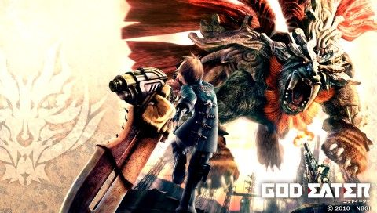

はいどうも、みんな大好きジャムお兄さんです。皆さん、スマブラ SP 楽しんでますか～ 僕は楽しんでます。今回はそんな SP な時代の流れに逆行した話をしようと思います。 それは......
ゴッドイーター

ナ、ナニー！あのモンスターハンターのパクリと言われているゴッドイーターだってー！ ......はいっ！茶番は置いておいて今回はハイスピードドラマティックアクションゲーム ゴッドイーターシリーズについて語っていこうかなと思います。
西暦 2050 年代。地球は、あらゆるものを捕喰する細胞「オラクル細胞」から形成される異形の怪物 「荒神（アラガミ）」によって荒廃し、彼らの「食べ残し」である人類は滅亡の危機に瀕していた。 人類の対抗手段は、生化学企業「フェンリル」によって開発された生体武器「神機」とそれを操る 「ゴッドイーター」だけだった。
極東支部初の新型神機の適合者となった主人公は、ゴッドイーターの拠点「フェンリル極東支部」 で様々な仲間と出会い、共に闘っていく内に、巨大な陰謀へと巻き込まれていく。
(ウィキペディアから引用)
という感じで世界観的には人類滅びかけてます。のっけから救いがありませんね。ちなみに「荒神」 ざっくり説明すると、どこからともなく表れてなんでも食べて食べた物の性質を取り込む超生物 です。こんなのが跋扈しているのですから、人類が追いやられるのも納得ですね。ですが人類も やられっぱなしというわけではなくいろいろと対抗策を用意してしぶとく生き残っているんですね それがこのシリーズのゲーム性にかかわってくる「神機」というわけです。
神機とは荒神に対抗するために生み出された武器です。今回プレイヤーが使用するのが第二世代 以降の神機です。本来第一世代の神機は近接と遠距離が独立した物なのですが、なんと第二世代 以降は遠近一体となった可変式の武器なのです！
可変式...いい響きだ......
プレイヤーはこの神機を使って荒神を狩っていきながら物語の陰謀に巻き込まれていくわけなので す。
軽く世界観を説明していきましたが、でも肝心のゲームはモンハンのパチモンでしょ？と疑って いる、お兄さんお姉さん方、そんなことないですよ！
このゲームのポイントは何といっても手に汗握るスピード感。 というものの、神機使い達は適合手術によって「オラクル細胞」という 荒神の細胞が移植されているため身体能力が高いという設定があります。そのためなんと、ジャンプ ができてしまいます。そのため空中での立ち回りも魅力のひとつです。
あと、先ほども申し上げた可変式の武器！これが立ち回りの自由度を大幅に広げてくれます。 どう攻めるのか試行錯誤するのはゲームの醍醐味ですね。
そして忘れてはいけないのが捕食。なんと、神機を使って荒神を捕食します。これを行うと バースト状態になってプレーヤーの性能が上昇します。これをうまく持続させられるかがゲーム をうまく運ぶカギになってきます。
あと、キャラメイク結構いい感じです。
というわけでいかがでしたでしょうか。本当はストーリーを無印から２まで丸々解説しようと 思っていたのですが、さすがに量が尋常じゃないと思い断念しました。そちらの方で期待されて いた方にはお詫び申し上げます。
あと、魅力的なキャラクターもいっぱいなので！キャラデザだけでも見てほしいです。
このゴッドイーターシリーズの魅力が少しでも伝わったなら幸いです。世界観が中二臭いので 不思議と胸が熱くなる男子も多いのでは？これが...恋...!?
アドベントカレンダーも私で１３回目です。....ん？13 日？
ナ、ナンダッテー！今日はあのゴッドイーター最新作ゴッドイーター 3の発売日ダッテー！
はいっ！というわけでゴッドイーター 3 をよろしくお願いしまーす。
ゴッドイーター 3 公式サイト